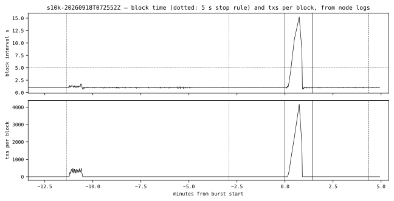
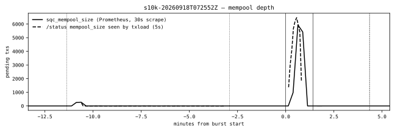
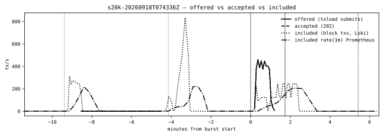

Validation report · node releases v1.1.0, v1.1.1 and v1.1.2
Splendor Quantum Chain
Release contents, upgrade compatibility, a stress test, and a validator fault and scaling programme that found, fixed and released a consensus defect — across node releases v1.1.0, v1.1.1 and v1.1.2.
v1.1.2 (feb2ef7) is live and ready on all three tiers. Section 6 records a blocking defect in v1.1.1 — multi-validator operation deadlocked — found, fixed, validated live and released in v1.1.2, on which four validators run at twice the block rate of one. The 30k stress stage was contaminated and 40k / sustained were not run: devnet was reconfigured under the test.
—In plain words: what the chain is, what is live, what was tested
1Release contents (PR #42, #43, #44)
2Upgrade compatibility
3Stress test
4Validator fault program
5Known limits, follow-ups, reproduction
6Validator scaling and onboarding
In plain words
What Splendor Quantum Chain is
A new Layer-1 blockchain built for the post-quantum era. Every account, transaction and block has been signed with ML-DSA-65 post-quantum signatures since the very first block, so there is no signature scheme to migrate later. Addresses and commitments use SHA3-256. The supply is fixed: 26 billion SPLD, minted once at genesis.
All three tiers run v1.1.2 (feb2ef7) since 18 September.
Capabilities in plain words
Post-quantum accounts and validators. User keys and validator keys are ML-DSA-65; the signatures that secure funds and blocks are designed to withstand quantum computers.
Native tokens. Fungible (QRC-20), multi-asset (QRC-1155) and collectible (QRC-721) tokens are built into the chain, no custom contract needed.
Migration bridge. Legacy SPLD and SPLV are burned on the old chain and claimed on the quantum chain, one for one.
Splendor Quantum Verification Layer. Instructions are dual-signed with two independent post-quantum schemes, ML-DSA-65 and SLH-DSA.
Validator admission. Approval-based, with a 2,500 SPLD bond. Public admission has not launched.
Tools people can use today. Block explorer, browser wallet extension, phone wallet, faucet.
x402 micropayments. A payment is reported as submitted and then confirmed, so a payer always knows whether it is final.
What was done this week
v1.1.0 (17 September) merged, a 26-commit hardening release: consensus recovery, fsync durability, validator-set reads, VM gas rules, public limits, snapshot recovery, wallet/KEM hardening, x402 and docs fixes.
Devnet and testnet upgraded in place, with no chain reset and no lost history.
Mainnet re-minted twice with the 26 billion SPLD treasury, genesis hash unchanged both times.
v1.1.1 (18 September): RLNC object-transfer library and optional sealed live path; off by default.
v1.1.2 (18 September): found, fixed and released the consensus defect that deadlocked every multi-validator set; proven live at four validators.
What is not claimed yet
RLNC live transfer is merged but off by default and not used by block sync.
DEX, lending and governance are not native modules.
Public validator admission is not open.
Multi-validator operation needs v1.1.2; on v1.1.1 it deadlocks. Tolerating one needs n ≥ 4 andbft_rounds_v1 active — unscheduled on every public tier today; schedulable on a running tier without a reset.
What the tests showed
The 40k, sustained and a clean 30k stage are scripted and self-mark contamination; they need a stable single-validator devnet window.
Test
Result
Detail
Upgrade in place, devnet-shaped (local harness + live devnet)
PASS — 79 / 79 ×3
v1.0.20, v1.0.21 → v1.1.0; v1.1.0 → v1.1.1; live devnet swaps at 106,997 and 139,085, genesis unchanged
all 10,000 accepted and included; one 15 s block; no restart
Stress test, 20,000 accounts
SURVIVED, contaminated
all 20,000 committed; concurrent validator-set change on devnet by another operator
Stress test, 30,000 accounts
CONTAMINATED
7,586 sent before the stop rule; second validator admitted 90 s before the burst; chain stalled 346 s
Stress test, 40,000 accounts
not run
devnet reconfigured mid-test
Validator fault program (4-validator lab)
PASS — 8 / 8 scenarios
under bft_rounds_v1; pre-fork control documents the n = 3 limit
Can more validators join, and does it help?
Does adding validators make the chain faster?
Yes — four validators are twice as fast as one. On v1.1.2 four make 2.00 blocks a second against 1.00 at one. The fault that deadlocked multi-validator sets is fixed, released and proven live. A validator on another continent loses about a third of its turns to a timeout that is now adjustable.
Can two validators join at the same time, one of them far away?
Yes. Two registered in the same block; a third joined from 200 ms away and the set survives heavy load on v1.1.2. The distant one loses about a third of its turns to a 3-second timeout, now adjustable.
Can anyone become a validator from their own machine or cloud?
Not yet: an existing validator must approve you and share a private cluster token, nodes talk on private addresses, and tooling must cope with 4 KB keys. Section 6.4 lists what it needs.
Technical · section 1
1Release contents
Node release v1.1.0 is the 26 commits ec8f060…b8e31a0 (tag eaef3c9), merged on 17 September 2026 as PR #42. PR #43, merged on 18 September as v1.1.1 (11d372e), adds the RLNC object-transfer library and an optional sealed live path. PR #44, merged the same day as v1.1.2 (feb2ef7), closes the multi-validator consensus defect that section 6 documents. The tables below list every review item, its implementation status and the commits that close it.
1.1PR #42 — hardening release, closure table
All 23 review items implemented. Item IDs and descriptions follow the reviewer's list; the three orchestrator fixes landed during closure are listed as their own rows.
Item
Description
Status
Evidence
C — consensus and durability
C1
Complete BFT recovery across rounds — two-phase rounds behind bft_rounds_v1 (not yet scheduled on live tiers)
implemented
f5d6041
C2
Do not report a failed state commit as successful
implemented
ec8f060
C3
Power-loss durability for blocks, state and signing records
implemented
6891140
C4
One committed validator set; propagate registry errors
implemented
7c38754
C5
Enforce the VM's work budget (child gas, copy charges, failed receipts) — behind vm_gas_v1 (unscheduled)
implemented
43b2ff9
C6
Public resource limits and effective timeouts
implemented
6975bdb
R — snapshot recovery and sync
R1
Default snapshot pagination
implemented
48b76df
R2
Bound and release snapshot sessions
implemented
48b76df, c1d56b9
R3
Bounded, resumable snapshot downloads
implemented
74cd1d2
R4
Reconcile both stores before deleting recovery evidence
implemented
74cd1d2, 3f6805e, 45495da
R5
Snapshot trust for a rotating validator set (genesis-checkpoint only)
implemented
04a1902
R6
Recover indexes, report readiness accurately
implemented
04a1902, 4dc5ad7, fe35f08; 694a46b
R7
Parallel block-fetch behaviour
implemented
04a1902, 4dc5ad7
I — interfaces: VM, compiler, SDK, x402, wallet, gateway
SQVL settlement and identity guarantees — behind verify_identity_v1 (unscheduled)
implemented
f17861a
I6
Wallet-file parsing and saving
implemented
d215087
I7
KEM rotation and replay policy
implemented
d215087
I8
Gateway TLS and event-stream behaviour
implemented
ce9743b
Documentation and bounds
README/SDK
Capability clean-up: advertised capabilities match the routed module catalogue; governance/DEX/exchange live-route claims dropped
implemented
b4a942e, 87f9b08, da6c2bc
RLNC
RLNC library bounds: repair, dimensions and codebook copies (the 26th commit)
implemented
b8e31a0
Orchestrator fixes landed during closure
O1
leveldb-free core/persist/filesync so the WASM signer build does not link leveldb; signer re-pinned
implemented
5a8dfb0
O2
Boot-safe tx-index backfill on an upgraded node: asynchronous walk, readiness reported separately (section 2.4)
implemented
694a46b
O3
/state/account served as a point read; simulation sandboxes release their snapshots
implemented
5e50bbb
Four items ship behind fork names that no live tier has scheduled yet — bft_rounds_v1 (C1), vm_gas_v1 (C5), vm_call_v1 (I3), verify_identity_v1 (I5). They activate through the fork-schedule extension on a running chain (section 2.1), never by editing the genesis document.
Accepted residuals (not blocking v1.1.0)
OperatorIdentities persistence is ungated before the verify_identity_v1 fork activates; the table is written but not consulted until then.
/status takes the executor lock; a heavily loaded executor delays status responses rather than serving a stale view.
Per-source request caps are keyed on RemoteAddr; behind cloudflared every request shares the tunnel's address, so the caps act as a global rather than per-client limit on hosted tiers.
Pre-fork BFT accepts kind-tagged votes; the stricter vote-kind check applies only after bft_rounds_v1 activates.
1.2PR #43 — RLNC object transfer, v1.1.1
Merged: main = 11d372e, tag v1.1.1 cut on 18 September 2026 at about 07:05 UTC; devnet and testnet upgraded in place and mainnet re-minted on it the same morning (section 2.3). Seven commits. Nothing consensus-visible or on disk changed, so the release rolls without a reset. The sealed live path is off by default: a node started without --object-codec answers 404 coded-object live path is not enabled.
Commit
Change
4afab9c
SQCO wire format with a signed codebook size
fe6dc21
Transfer controller: authenticate before decode
14c652e
Optional sealed RLNC live path (--object-codec, default off)
Review fix: aggregate symbol-fetch deadline max(2 min, n × 2 s), capped at 10 min; a single HTTP client
11d372e
Review fix: manifest and symbol reply caps applied to the sealed wire size — before this, proofs above about 48 KiB were truncated
Status by review item, final for v1.1.1.
Item
Review item
Status
What exists / what is missing
(2)
Wire format versioned
partial
SQCO magic / version / type; every length prefix capped before allocation; signed CodebookSize; anchor kinds allowlisted. Still no chain-id binding in DescriptorID.
(3)
Transfer controller
partial
Manifest exchange, bounded symbol requests, aggregate deadline. No capability negotiation, expiry, retry/failover or progress reporting.
(4)
Authenticate before decode
implemented
Verify → authorise → per-symbol Merkle proof before Absorb; a nil authoriser fails closed.
(5)
Reconstruct and validate
partial
Padding rejected, full rank required. FetchCodedObject has no non-test caller, so no decoded object is chain-validated by anyone yet.
(6)
Selectable transport
partial
Flag, ordinary fallback, default off. No metrics, no per-peer byte/CPU budgets; the hub serves the first published snapshot until restart.
(7)
Benchmark
partial
SQCO bytes, authenticate-vs-decode time, corrupt-proof and corrupt-coefficient scenarios. The uncoded baseline lacks selective retransmission, so the gain is an upper bound.
—
Recoding
absent, correctly
Intermediate nodes do not recode; out of scope for v1.1.1.
1.3PR #44 — multi-validator deadlock fix, v1.1.2
Merged on 18 September 2026 as v1.1.2 (feb2ef7), twelve commits. It closes the consensus defect that stopped every multi-validator set on v1.1.1 (section 6.2), a second consensus defect found while fixing the first, the sync-latency defect beside them, and it makes the consensus timeouts configurable.
Change
What it does
Multi-validator deadlock fix
A view owns one value: a leader can no longer re-mint a different block at the same height and round and so equivocate against itself. Carries a regression test that fails on main.
Vote erased by a failed apply
A second, distinct defect: a failed apply erased the vote a node had already cast, letting it prevote a different value at the same view. Found with a randomized interleaving harness.
Honest re-send no longer an error
The vote set rejects a differing hash before it checks the address, so a duplicate from the same voter is benign by construction; it is no longer logged as an error.
Concurrent peer-height probing
Replaces a serial loop that cost five seconds per unreachable peer (section 6.1).
--round-timeout, --vote-timeout
Both configurable, defaulting to today's values — the distance budget section 6.3 asks for.
Dead metric counters driven
sqc_txs_failed_total and sqc_rpc_requests_total finally move.
Route documentation
Corrects five validator and staking routes that were documented but return 404.
Devnet stress harness
The harness of section 3 and its fixes.
Technical · section 2
2Upgrade compatibility
2.1Method
Before v1.1.0, devnet and testnet ran v1.0.20 (4250a5f) and mainnet ran v1.0.21 (9f974cd). The question is whether a node holding a data directory written by either release can be switched to v1.1.0 without a chain reset, keep producing on the same genesis, and be switched back. The procedure is step 2 of the operator runbook, the image swap, exercised two ways: by a local swap harness that runs the real splendor-infra entrypoint on copies of devnet-shaped and mainnet-shaped data directories (scratchpad/swap/run.sh <old-ref> <new-ref> <devnet|prod>, to be committed alongside the validator-join scripts), and then for real on the live tiers.
Baseline. The old release seals at least 15 blocks carrying transfers and a deployed QSol counter contract; height N, genesis hash, validator set and /status are recorded.
Swap. The old node is stopped with SIGTERM and the candidate image is started on the same data directory. The entrypoint writes the genesis document only on first boot, so an existing directory is never re-minted.
Verify. The candidate resumes at N+1 with prev_hash equal to the old head; genesis hash and block 0 identical; balances byte-identical; a new transfer confirms; the counter's contract state is readable; the tx-index backfill runs and /readyz turns ready.
Crash recovery. The candidate is restarted cleanly and then killed with SIGKILL; it recovers and seals both times.
Fork extension. The release's new fork names (vm_gas_v1, bft_rounds_v1 for v1.1.0) are scheduled above head through the opt-in fork-schedule extension on the running node; the schedule is adopted and blocks are sealed across every activation. The genesis document is never edited, so its hash cannot change.
Rollback. The old release boots on the directory the candidate wrote, and seals. On the mainnet-shaped directory v1.0.21 additionally shows identical balances, readable candidate-era transactions and a confirming new send.
Every check is a scripted assertion and the harness exits non-zero on the first failure.
2.2Local swap harness results
Data directory
From → to
Checks
Notes
devnet-shaped
v1.0.20 → v1.1.0
PASS — 79 / 79
the path devnet and testnet took
mainnet-shaped
v1.0.21 → v1.1.0
PASS — 80 / 80
same genesis document and validator key as mainnet; rollback keeps balances identical
devnet-shaped
v1.0.21 → v1.1.0
PASS — 79 / 79
cross-check: mainnet's old release on devnet-shaped data
devnet-shaped
v1.1.0 → v1.1.1
PASS — 79 / 79
same scenario set; rollback to v1.1.0 boots and seals
mainnet-shaped
v1.1.0 → v1.1.1
PASS — 80 / 80
same scenario set; balances byte-identical across swap and rollback
All heights and hashes read from each tier's /status before and after the swap.
2.4Transaction-index backfill and readiness
A v1.1.0 node that inherits a pre-v1.1.0 directory rebuilds its transaction index by walking the chain in the background (694a46b). Block, state and account RPCs answer immediately from the stores; only index-backed lookups wait. During the walk /readyz answers HTTP 503 so a load balancer keeps traffic on peers, while /healthz stays 200 and /status remains available:
{"ready":false,"reason":"transaction index behind applied height",
"applied_height":…,"index_height":…,"index_coverage_from":0,
"syncing":false,"recovering":false,"validator_locked":false}
Devnet reached ready about 3 minutes after the v1.1.0 swap (index 98,303 → 107,089); testnet about 10 minutes (75,775 → 434,911), sealing throughout. The walk is a one-time cost: the v1.1.0 → v1.1.1 swaps found the index watermark already present and answered /readyz ready at once (devnet applied 139,158 = index 139,158; testnet 466,967 = 466,967), with /healthz 200 throughout; the re-minted mainnet was ready from block 0 with an indexer lag of 1.
Technical · section 3
3Stress test
3.1Method
Target: the devnet node (splendor-quantum-devnet-1, v1.1.1, commit 11d372e) on its own host, a t4g.xlarge (4 vCPU, 16 GiB). Baseline before load: block interval 1.000 s (Loki p50 1.001 s, p95 1.022 s over 586 blocks), background 0.80 tx/s, mempool ≤ 1, host CPU ≤ 27 %, 2,304 CPU credits.
Load is generated by cmd/txload running inside the devnet host's compose network, so the RPC path under test is the node's, not the tunnel's: 20 containers, each pinned to --cpus 0.05 (0.1 from the 20k run on) and --memory 48m, each driving a disjoint --sender-offset range at --rate 24 --one-shot — every sender submits exactly once, so a stage is a burst of N signed ML-DSA-65 transfers at the min_fee_v1 floor, offered from 20 source addresses. Stages escalate the sender population 10,000 → 20,000 → 30,000 → 40,000, followed by a 15-minute sustained stage. Before each burst a funding pass tops up the new senders with 1 SPLD each from 20 funders that the faucet had endowed with 44,000 SPLD in total (faucet 992,180 → 948,180 SPLD). The txload changes (--lazy-keys, --one-shot, --scan-node -1, --fund-deadline) are commit e2014c8; the runbook and scripts are e35f323 under scripts/aws/devnet-stress/ on branch stress/txload-devnet, to be merged.
A watcher samples /healthz and /status every 5 s and records container restarts and OOM kills; the 5 s block-interval line is drawn dotted in the figures as the degradation threshold. Metrics come from Prometheus on the observability box (15 s series: sqc_chain_height, sqc_mempool_size, sqc_txs_processed_total, host CPU/memory/load), from Loki (per-block transaction counts and intervals from the node's own log lines), from docker stats for the node process, and from each driver's stats.jsonl / summary.json. Two exported counters are dead on the builds under test and were not used: sqc_txs_failed_total and sqc_rpc_requests_total are registered but never incremented (both are driven as of v1.1.2, after these runs). The stage scripts self-mark a stage CONTAMINATED when the validator set or the node container changes during its window.
3.2Results
One row per measurement, one column per stage. RTT = driver-side submit round trip; inclusion = submit to block, sampled 1 in 10; "node CPU" is docker stats for the node process, 100 = one core. 30k: 22,414 of the 30,000 transactions were never sent because the stop rule halted the drivers.
10,000
20,000
30,000
40,000
sustained
Verdict
SURVIVED (degraded)
SURVIVED, contaminated
CONTAMINATED
not run
not run
Burst start (UTC), duration
07:37:41, 85 s
07:53:28, 104 s
08:46:08, 92 s (stopped)
—
—
Submitted / accepted (202)
10,000 / 10,000
20,000 / 20,000
7,586 / 7,586
—
—
429 / rejected / transport errors
0 / 0 / 0
0 / 0 / 0
0 / 0 / 0
—
—
Offered peak (5 s) / accepted mean, tx/s
523 / 118
460 / 192
174 / 82
—
—
Included rate peak (1 min, Prometheus), tx/s
206
204
55
—
—
Mempool peak (Prometheus 30 s / driver 5 s)
5,936 / 6,468
14,531 / 15,374
7,233 / 6,913
—
—
Block-time peak; intervals > 5 s; back to 1 s after
15.26 s; 3; 53 s
7.77 s; 6; 301 s
346 s (stall); 39; 768 s
—
—
Transactions per block, peak
4,173
613
355
—
—
Inclusion p50 / p95
16.1 s / 26.8 s
14.4 s / 30.0 s
13.9 s / 16.0 s
—
—
RTT p50 / p95
59 ms / 1,571 ms
435 ms / 1,626 ms
1,824 ms / 2,470 ms
—
—
Host CPU peak / node CPU peak
90 % / 394 % (≈ 4 cores)
99 % / —
99 % / 212 %
—
—
MemAvailable min / load1 peak
11.6 GiB / 6.19
13.9 GiB / 7.51
12.9 GiB / 11.74
—
—
Restarts / OOM / bad /healthz samples
0 / no / 0 of 96
0 / no / 0
0 / no / 0 of 150
—
—
Validator set during the stage
1
1 → 2
1 → 4
—
—
10,000 accounts — survived, degraded
About 480 tx/s were offered across the 20 source addresses (5-second peak 523 tx/s); every transaction was accepted and included, with no 429 and no rejection. The batch scheduler drained the flood by growing blocks rather than holding the 1 s cadence: one block carried 4,173 transactions and took 15.26 s, about 4.2 ms per transaction, which is the ML-DSA-65 verification cost. Three block intervals exceeded 5 s. Block time was back at 1 s within one block of the crest (07:38:25 → 07:38:35 UTC); inclusion p95 was 26.8 s. The node process peaked at 394 % CPU (all four cores), /healthz answered 200 in all 96 watcher samples, no restart, no OOM. A later baseline of the same burst on the re-minted chain cleared the 10,000 accounts in 511-transaction blocks at a flat 1 s cadence instead: the adaptive batch limit sat at its 10,000 ceiling here and at its 100 floor there (section 6.1).
20,000 accounts — survived, contaminated
All 20,000 transactions were accepted and committed (largest block gap 7.77 s, no stall, no OOM, no restart). The numbers are not attributable to load alone: from 07:54 UTC an external operator began converting devnet into a multi-validator set on the same host — containers sqc-val-01/02 joined the node's network at 07:54:16, the node container was recreated between 07:58 and 08:02, and sqc_txs_processed_total reset mid-window (which is why the Prometheus "included" delta for this stage is meaningless). The stage self-marked CONTAMINATED.
30,000 accounts — contaminated
The stage was retried once the earlier reconfiguration had settled. Pre-flight at 08:29 UTC confirmed a single validator (restarts 0, 1.00 s blocks, empty pool), with three foreign sqc-val containers still co-resident on the host at about 55 % CPU each. The funding pass finished at 08:43:03. At 08:44:38, 90 s before the burst, the external operator admitted a second validator (first 2-vote certificate at height 142,792). The burst started at 08:46:08; at 08:46:42 the height stalled at 142,821 for 346 s with 78 BFT: round timeout, view change lines. The stop rule (average block time 5.42 s over 130 s) halted the drivers at 08:47:15 after 7,586 of the 30,000 transactions had been sent — all 7,586 accepted, none rejected, no 429. The set went 2 → 3 at 08:52:35 and 3 → 4 at 08:58:10 during the drain; the pool had drained by 08:59:03. The node process never faltered (/healthz 200 in all 150 watcher samples, restarts 0, no OOM); consensus did. The stall is consistent with a 2-of-2 quorum whose new member had joined 90 s earlier as much as with load, so the result is not attributable to load.
Contrast. At 10k, on a true single validator, the node cleared a 4,173-transaction block in 15 s and recovered on the next block. At 30k, under a 2-validator quorum, the largest block was 355 transactions and the chain stalled. The ceiling moved from the executor (ML-DSA-65 verification, about 4 ms per transaction) to consensus liveness under the pre-fork rules.
40,000 and sustained — not run
The validator set changed during the 30k stage, which is the sweep's abort rule. At hand-off (09:05 UTC) devnet was frozen at height 142,888 with validator_set_size 4 and a 3-of-3 certificate requirement — the external operator's configuration under the pre-fork rules, the live counterpart of the n = 3 stall reproduced in the lab (section 4). The 40k and sustained stages, and a clean 30k, are fully scripted and self-mark CONTAMINATED on a topology change; the sweep resumes only on a stable single validator, or on a re-baselined multi-validator devnet with bft_rounds_v1 scheduled.
3.3Figures
Time axis: minutes from burst start. Vertical lines: dotted = funding pass, solid = burst start and end, dashed = end of the drain window. Horizontal dotted line in the block-time panels: the 5 s threshold.
Figure 3.1 — 10,000 accounts: offered (driver submits), accepted (HTTP 202) and included (Loki per-block counts; Prometheus 1-minute rate). The funding pass at −11 min is visible at left.

Figure 3.2 — 10,000 accounts: block interval and transactions per block from the node's log lines. The single 4,173-transaction block is the 15.26 s interval; the cadence returns to 1 s on the next block.

Figure 3.3 — 10,000 accounts: mempool depth from Prometheus (30 s scrape) and from the drivers' /status polls (5 s); the 30 s scrape under-reads the true peak of 6,468.Figure 3.4 — 10,000 accounts: host CPU, node-process CPU (100 = one core), driver CPU, memory, load1 and MemAvailable. The node saturates all four cores for the duration of the crest; memory is untouched.

Figure 3.5 — 20,000 accounts: offered, accepted and included. The included series after +1 min overlaps the external validator-set change; the stage is contaminated from 07:54 UTC.Figure 3.6 — 20,000 accounts: block interval and transactions per block. The burst itself never exceeded 7.77 s. The 13 s interval at −3.4 min is the funding pass's 10,000 transfers being drained in one 4,173-transaction block just after the funding window closed (07:50 UTC), before the burst; the spike near +5 min coincides with the node container's recreation (07:58–08:02 UTC).Figure 3.7 — 30,000 accounts: offered, accepted and included. Offered stops at +1.1 min when the stop rule halts the drivers; inclusion resumes only after the 346 s stall, in blocks capped near 355 transactions.Figure 3.8 — 30,000 accounts: block interval and transactions per block. The ramp from +0.5 to +6.4 min is a single 346 s interval (height 142,821) drawn across its duration; the set grew 1 → 2 ninety seconds before the burst and 2 → 4 during the drain.
Technical · section 4
4Validator fault program
4.1Method
A local four-validator lab (A, B, C, D) built on the scripts/validator-join harness — scripts/validator-join/run-fault-lab.sh, commit d0c6805 on a worktree, to be merged. Real sqc-node processes on loopback, a scratch genesis carrying devnet's fork schedule plus modules_v2, validators_admission_v1 and bft_rounds_v1, 2-second blocks. Nothing in the lab contacts a deployed tier. Each scenario samples a window of heights and asserts the properties the join harness already checks: identical hash, state root and producer at every height across all honest nodes, a certificate with at least quorum-many distinct votes on every block, and no unexpected consensus refusal lines in the honest logs. At n > quorum, honest nodes legitimately finalise the same block with different valid 3-of-4 vote subsets, so qc_root bytes may differ between nodes; the observer allows that (--allow-qc-root-divergence) while still requiring hash, state-root and producer agreement and a per-node certificate of at least quorum size.
#
Scenario
Result
Observed
1
Add B, C, D live
PASS
Set 1 → 2 → 3 → 4. A self-registers under the producer admission clause and approves each joiner; each joiner registers through its own RPC. The n = 2, 3 and 4 windows are clean: identical hash, state root and producer per height, quorum-many distinct votes.
2
Remove D
PASS
Set 4 → 3, clean n = 3 window. After the 32-block unbonding, finalize_exit returned the 2,500 SPLD bond (balance 3,499.9 → 5,999.7 SPLD). D kept following as a non-validator.
3
Re-add D
PASS
Registered on the persisted approval; set back to 4; clean window.
4a
D crashed (SIGSTOP) at n = 4
PASS
A, B and C sealed a full window on quorum 3 (height 103 → 114). D resumed and re-synced.
4b
D leads and withholds
PASS
D paused before a height it led (H0 = 115). The honest three round-changed and committed H0 at round 1 within 4 s.
4c
D forges blocks
PASS
Forged blocks pushed at A and at B were both refused with HTTP 400 block certificate rejected: multi_validator requires a quorum certificate. The chain climbed 118 → 123.
4d
D restarts with a cleared vote journal mid-height
PASS
Chain 123 → 134 unbroken; no quorum certificate double-counted any validator. An honest equivocation dropped line cannot be provoked at n = 4 by design: a precommit needs a prevote QC of three, and once three prevote the height commits, so a cleared-journal node re-syncs forward instead of re-signing an open view. The drop path itself is covered by the in-process consensus tests.
PF
Pre-fork control (same lab without bft_rounds_v1)
documented
n = 4 with a withholding leader still recovered (H0 = 67 committed in 4 s: a withholding leader casts no vote, so nobody is vote-locked). n = 3 with one member paused stalled at height 77 (quorum ⌊2·3/3⌋+1 = 3 of 3) and did not resume when the member returned; A and B logged SECURITY: durable vote-lock refuses different block at this height; view-change will not unlock — the C1 single-vote wedge that needs --clear-vote-journal and that bft_rounds_v1 removes.
End state. Blocks 1..133 identical (hash, state root, producer) across all four nodes; A ran as one unbroken process from genesis to the end; no consensus refusal lines in any honest log beyond the HTTP 400 responses that scenario 4c provokes on purpose.
4.2Quorum and its consequence
quorum(n) = ⌊2n/3⌋ + 1 · tolerated faults f = n − quorum(n)
The certificate on a block needs ⌊2n/3⌋+1 votes from the active set of n validators. For n = 1, 2, 3 that is every validator, so a two- or three-validator network halts if any single member stops, withholds or is partitioned. One faulty member is first tolerated at n = 4, two at n = 7 — that is the arithmetic; section 6.2 shows a live four-validator set halting anyway, for a reason outside it. The mainnet set is currently one producer (validator_set_size 0 in the registry, the genesis producer sealing).
Recommendation. These scenarios passed in a local four-validator lab, and that result did not transfer to real hosts: on devnet a three-validator set deadlocked under load and a four-validator set halted for 595 s (section 6.2). Tolerating a faulty member needs n ≥ 4 andbft_rounds_v1and the re-minting fix; with that fix, released in v1.1.2, a four-validator set has cleared the load that deadlocked the old build (section 6.1). On v1.1.1 and earlier the operable configuration is one validator. bft_rounds_v1 is unscheduled on every public tier today; it can be scheduled above head on a running tier through the fork-extension rollout, with no reset (section 2.1).
n
1
2
3
4
5
6
7
8
9
10
quorum
1
2
3
3
4
5
5
6
7
7
tolerated faults
0
0
0
1
1
1
2
2
2
3
Technical · section 5
5Known limits, follow-ups, reproduction
5.1Known limits
RLNC live transfer is off by default and not consumed. The sealed live path needs --object-codec; FetchCodedObject has no non-test caller, so block sync does not use it and no decoded object is chain-validated yet. DescriptorID is not bound to a chain id, and the hub serves the first published snapshot until restart (section 1.2).
Small validator sets have no fault tolerance, and fault tolerance needs the fork. ⌊2n/3⌋+1 with n ≤ 3 requires every vote, and without bft_rounds_v1 a paused member wedges an n = 3 set on a durable vote-lock (section 4, pre-fork control). Surviving one faulty member needs n ≥ 4, bft_rounds_v1 active, and the re-minting defect fixed: a four-validator devnet set halted for 595 s on its first contested height. Root-caused, fixed and released in v1.1.2 (PR #44), validated live on a four-validator set — three members on the fix, one still on the defective build — under the same load (sections 6.1, 6.2). Demonstrated live on 18 September: a three-validator devnet running the two-phase path deadlocked one second into a load burst, because a locked member cannot be outvoted when the quorum includes it, and it did not recover on its own (section 6.2).
A distant validator loses a third of its leader slots. The round timeout was hardcoded to 3 s and the vote timeout to 800 ms; a member behind 200 ms of latency missed 29 of 84 leader slots while its co-located peers missed none. Both are flags as of v1.1.2, so the budget can now be widened — untested at distance. The chain recovers every time — it is a throughput cost, not a liveness one (section 6.3).
The consensus round and lock are not observable through the API./status reports neither, so a deadlocked set looks healthy from outside; only the node logs show it.
qc_root legitimately differs between honest nodes at n > quorum, because each finalises with its own valid 3-of-4 vote subset; comparisons across nodes must use hash, state root and producer, as the lab observer now does (--allow-qc-root-divergence).
Public validator admission is closed. Admission is approval-based with a 2,500 SPLD bond.
DEX, lending and governance are not native modules; the README and SDK were corrected in v1.1.0 to stop advertising them (b4a942e, 87f9b08, da6c2bc).
Four hardening items are unscheduled on live tiers: bft_rounds_v1, vm_gas_v1, vm_call_v1, verify_identity_v1 ship in v1.1.0 but activate only once scheduled (section 1.1).
A flood is drained by growing blocks, not by holding cadence. Under the 10k burst one 4,173-transaction block took 15.26 s (about 4.2 ms per ML-DSA-65 verification, all four cores busy); inclusion p95 reached 27–30 s. No transaction was lost or refused (section 3).
Devnet is currently a 4-member set under the pre-fork rules, and frozen. Reconfigured by another operator during the stress sweep on 18 September (08:12 UTC: 3 members, 2.5-minute freeze at 142,275; 08:44–08:58: 1 → 4 during the 30k stage, 346 s stall at 142,821); at hand-off, 09:05 UTC, it sat at height 142,888 with validator_set_size 4 and a 3-of-3 certificate requirement — the live confirmation of the section 4 finding. Under load the ceiling moved from ML-DSA-65 verification (10k, single validator: 4,173-transaction block in 15 s, recovered) to consensus liveness (30k, 2-of-2 quorum: 355-transaction blocks, stalled).
The explorer's indexer stalls behind very large blocks.sqc-indexer fetches each block as one multi-megabyte JSON document and processes receipts one by one; behind blocks 141,284 (4,176 transactions) and 141,285 (2,455) it stayed parked at checkpoint 141,283 for over 45 minutes, including across a restart.
Dead metrics (fixed in v1.1.2). sqc_txs_failed_total and sqc_rpc_requests_total were exported but never incremented on the builds under test; the stress runs relied on driver-side counts instead.
Accepted residuals from PR #42 (section 1.1): ungated OperatorIdentities persistence pre-verify_identity_v1; /status under the executor lock; per-source caps keyed on RemoteAddr behind cloudflared; pre-fork BFT accepting kind-tagged votes.
5.2Follow-ups
RLNC (v1.1.1 partials): bind DescriptorID to the chain id; add capability negotiation, expiry, retry/failover and progress to the controller; give FetchCodedObject a real consumer that chain-validates the result; add metrics and per-peer byte/CPU budgets; re-publish snapshots without restart; re-benchmark against an uncoded baseline with selective retransmission.
Schedule bft_rounds_v1 first, then vm_gas_v1, vm_call_v1 and verify_identity_v1, on devnet through the fork-schedule extension above head (no reset), then promote tier by tier. Do not grow any public validator set until the two deadlocks are fixed.
Key request caps on a per-client value that survives the tunnel (forwarded client address, signed by cloudflared). The two dead counters are driven as of v1.1.2.
Resume the stress sweep (clean 30k, 40k, 15-minute sustained) only on a stable single-validator devnet, or on a re-baselined multi-validator devnet with bft_rounds_v1 scheduled; the scripts self-mark contamination, so the window only needs to be protected from topology changes (section 3).
Bounded block fetch and batched receipt lookups in sqc-indexer, so the explorer keeps up with multi-thousand-transaction blocks.
Expose the consensus round, per-height round state and current lock in /status, so a deadlock is diagnosable without shell access (section 6.2).
Populate the batch controller's CPU-pressure input or delete the branch: today it is dead code and batch size follows pool depth alone (section 6.1).
Validator scaling and onboarding program: section 6 (in progress).
Chase the residual equivocation that remains on the fixed build, and exercise the two later consensus fixes and the new timeout flags on live hardware — v1.1.2 shipped them, but only v1.1.2-rc1 has been under load (section 6.1).
Tune --round-timeout for a geographically spread set and confirm the missed slots go away: the flags exist as of v1.1.2, but a validator 200 ms away still lost 34.5 % of its leader slots on the default 3 s (section 6.3).
Gate OperatorIdentities persistence behind verify_identity_v1; serve /status from a snapshot that does not take the executor lock.
Merge scripts/validator-join/run-fault-lab.sh (d0c6805, on a worktree), the txload changes (e2014c8) with scripts/aws/devnet-stress/ (e35f323, branch stress/txload-devnet), and commit the local swap harness next to them.
5.3Reproduce
# Build the releases under test
git checkout v1.1.0 # or v1.1.1 (11d372e)
go build -o bin/sqc-node ./cmd/node
go build -o bin/txload ./cmd/txload
# Section 2 — local swap harness (runbook step 2) on a copy of an old-release data directory;# runs the real splendor-infra entrypoint, asserts, rolls back, extends the fork schedule
scratchpad/swap/run.sh v1.0.20 v1.1.0 devnet # 79 checks
scratchpad/swap/run.sh v1.0.21 v1.1.0 prod # 80 checks, mainnet-shaped
scratchpad/swap/run.sh v1.1.0 v1.1.1 devnet
curl -s https://quantum-rpc-devnet.splendor.org/status | jq '{height, genesis_hash, validator_set_size}'
curl -si https://quantum-rpc-devnet.splendor.org/readyz | head -1 # 503 during the index walk# Section 3 — devnet stress (branch stress/txload-devnet: txload e2014c8, runbook e35f323)# 20 containers on the node's compose network, --cpus 0.05 --memory 48m each, disjoint sender ranges
scripts/aws/devnet-stress/README.md # preflight, funding, stages, watcher, figures
bin/txload run --rpc http://node:8080 --chain-id splendor-quantum-devnet-1 \
--seed funder-0.seed --senders 500 --sender-offset 0 --lazy-keys \
--rate 24 --one-shot --scan-node -1 --fund-deadline 5m \
--stats s10k-funder0.jsonl --summary s10k-funder0.json
# stage outputs: runs/<stage>/{stats.jsonl,summary.json,watch.jsonl,metrics.json}; figures/*.svg; report/summary.json# Section 4 — validator lab (never contacts a deployed tier)
VALIDATORS=3 scripts/validator-join/run-live-join.sh
scripts/validator-join/run-state-sync-join.sh
scripts/validator-join/run-fault-lab.sh # scenarios 1–4d + pre-fork control; d0c6805, to be merged# This document
./build.sh --preview
Technical · section 6
6Validator scaling and onboarding
Three questions, answered on devnet's real hosts. The joiner infrastructure (branch feat/devnet-joiners: three t4g.small joiners, the producer's :8080 published inside the VPC, a shared write-plane token, and bft_rounds_v1 fork-extended above head) was applied, and the sweep ran to a conclusion: 6.1 carries the three load runs, including the fixed build clearing the burst that deadlocked the released one; 6.2 the two halts, their shared root cause, the fix and the recovery procedure; 6.3 the joint join; and 6.4 the operator journey, answered from the code and the documentation as they stand today.
6.1Does adding validators improve performance?
Method
The same txload burst as section 3 — a fixed number of one-shot senders from 20 containers — is replayed against devnet at validator-set size 1, 3 and 4, on real hosts, with bft_rounds_v1 active, and the topology held still for the whole stage (the scripts self-mark CONTAMINATED otherwise). Compared per run: accepted and included tx/s, transactions per block, block time (p50, p95, max), inclusion and submit round trip (p50, p95, max), mempool peak, host and node CPU, and the number of heights that needed a round above 0.
What to expect, stated before the data
Three runs answer this, and the third is decisive: the same burst that deadlocked three validators on v1.1.1 was cleared by four validators on v1.1.2-rc1, the build carrying the fix. Throughput should not scale with n. Every height has exactly one leader, (height + round) mod n, and only the leader assembles a block; the other members verify it and vote. A block is final when ⌊2n/3⌋+1 votes are back, which adds one network round trip — proposal out, votes back, certificate — between consecutive heights, so block time and inclusion latency should grow slightly with n and with the distance between members, and the executor cost that set the ceiling at 10k (about 4 ms of ML-DSA-65 verification per transaction, on the leader) is unchanged. What more validators buy is fault tolerance (one faulty member from n = 4, section 4.2) and independent verification of every block, not transactions per second. The test is there to measure how much latency the round trip costs, and to confirm the throughput does not fall.
The three runs
Identical burst in all three: 10,000 accounts, one transaction each, one-shot, same containers and parameters, the same senders reused so the work is byte-identical.
Run
Validators
Build
Transactions included
Median block interval
Verdict
One validator
1
v1.1.1
10,000 of 10,000
1.00 s (max 2.45)
passed
Three validators
3
v1.1.1
683 of 10,000
deadlocked at height 5,584
halted
Four validators
4
v1.1.2-rc1 ×3, v1.1.1 ×1
10,000 of 10,000
3.41 s (max 7.50)
passed
The answer. The defect that stopped multi-validator operation is found, fixed, covered by a regression test that fails on main, and demonstrated live under the load that previously deadlocked the chain — released as v1.1.2 (PR #44). And on a sound engine more validators are faster: a four-validator set on v1.1.2 runs at 2.00 blocks per second against 1.50 at three and 1.00 at one. Four validators are twice the block rate of a single one, rising roughly linearly with the number of leaders proposing.
Correction to an earlier reading. An earlier draft of this section concluded that more validators cost throughput and that one validator was the fastest configuration. That conclusion is withdrawn. Every measurement behind it came from a set that was deadlocked, recovering, or carrying a member with 200 ms of latency injected into it. Measured on a sound engine with no injected delay, four validators are twice as fast as one.
What was under load, precisely. Only three of the four validators were actually on the candidate build; the fourth ran v1.1.1 — the build that caused the deadlock — for the whole run. That makes the result stronger, not weaker: the set absorbed the burst while one member was still running the defective code. The cause deserves an operator's attention, because anyone testing across regions will meet it: the 200 ms of latency injected on that node to simulate distance also broke its image pulls from the registry, so every rollout wrote its configuration and silently left the old container running. It was caught afterwards by comparing running images, not by any rollout reporting a failure. Of the fixes, v1.1.2-rc1 carried the first three; the two further consensus fixes and the timeout flags landed after it and are in released v1.1.2, exercised in the full suite and under the race detector but not yet on live hardware.
Per-run detail
Same burst, same 10,000 senders, replayed at each set size; the senders are reused unchanged so every firing does identical work. n = 1 is the baseline: set held at 1, validator fingerprint identical before and after, no stop rule, run perf-n1-20260918T102705Z. No n = 3 figure was obtained: that burst was cancelled after the chain deadlocked (section 6.2), so the column is empty rather than partial. The n = 4 column is the mixed-build run above — three members on v1.1.2-rc1, one still on v1.1.1, one of them carrying 200 ms of injected latency; a dash is a figure not captured for that run.
n = 1
n = 3
n = 4 · rc1 ×3, v1.1.1 ×1
Verdict
PASS
not obtained
PASS
Burst window (UTC), duration
10:27:26–10:28:23, 57 s
cancelled after the deadlock
57 s
Drain complete
10:31:18
—
36 s after the burst
Submitted / accepted (202)
10,000 / 10,000 (100.00 %)
—
10,000 / 10,000 (100.00 %)
Accepted tx/s, mean over the burst
175.4
—
—
Included / mean tx/s over burst + drain
10,000 / 43.1
—
10,000 / —
429 / rejected / transport errors
0 / 0 / 0
—
0 / 0 / 0
Mempool peak (Prometheus / driver)
5,337 / 5,564
—
6,763
Block time p50 / p95 / max
1.00 s / 1.37 s / 2.45 s
—
3.41 s / — / 7.50 s
Intervals > 5 s (of blocks in window)
0 of 227
—
—
Transactions per block, peak (blocks with tx)
511 (27)
—
511
Inclusion p50 / p95 / max
6.1 s / 13.5 s / 14.4 s
—
6.4 s / 21.5 s / —
Submit round trip p50 / p95 / max
194 ms / 526 ms / 884 ms
—
—
Host CPU peak / node CPU peak
89.8 % / 237 % of 400 %
—
— / 269 %
Memory peak / MemAvailable min
8.5 % / 14,272 MB
—
9.3 % / —
Restarts / OOM / non-200 health samples
0 / no / 0
—
0 / no / 0
Heights committed at round > 0
n/a
—
max round 4 → 2 → 1
The fixed run, phase by phase
All four phases were measured. The set finished marginally quicker than it started, and the maximum round fell as the chain settled: 4 when idle, 2 during the burst, 1 after the drain.
Phase
Median block interval
Idle, before the burst
0.65 s
Burst
3.41 s
Drain
0.70 s
Idle, after the drain
0.63 s
Accepted 10,000 of 10,000 with zero rejections, zero rate limiting and zero transport errors. Mempool peaked at 6,763 and drained in 36 s. Largest block 511 transactions. Inclusion median 6.4 s, 95th percentile 21.5 s. Node CPU peaked at 269 %, memory at 9.3 %, with zero restarts, no out-of-memory events and no failed health checks. The validator fingerprint was identical before and after, so the topology held throughout.
Equivocation during the burst was zero. The residual lines tick along at roughly one per 45 s of idle regardless of load — 8 in the 355 s before the burst, 0 in the 57 s of contention, 6 during the drain, 4 afterwards — and all come from one validator, a different one from the node that wedged the old build. Load does not provoke it, and it no longer stops the chain.
Still open on the fixed build: the residual equivocation from that one validator. The other anomaly — a roughly 7-second tail at the 95th percentile, present in every phase including idle, with the spread narrowing under load from 13:1 to 2.2:1 — is now explained: it is the 200 ms member's leader slots timing out at the hardcoded 3-second round timeout, and it has a remedy (section 6.3).
Idle block cadence by set size
Measured with no load at all, from the nodes' own commit log lines, both windows at the tier's real block interval of 1 second and before any recovery intervention. Neither window had a single height needing a round above zero, or a single view change.
Window
Blocks per second
Median interval
Blocks
Rounds > 0 / view changes
1 validator
1.00
1.00 s
405
0 / 0
3 validators, healthy
1.50
0.64 s
—
0 / 0
4 validators, rc1, one member 200 ms delayed
0.594
0.65 s
—
7.0 % of heights
4 validators, v1.1.2, no injected latency
2.00
0.50 s
180 in 90 s
—
Block rate rises with the number of leaders proposing: 1.00 at one validator, 1.50 at three, 2.00 at four — 180 blocks in 90 seconds, one every 0.50 s. The 0.594 row is the same set size with 200 ms injected into one member, and it is the odd one out: its median is a brisk 0.65 s but its mean is 1.68 s, with 7.0 % of heights needing a round above zero, because that member's leader slots time out (section 6.3). An artificially delayed member is what makes the rate fall, not the set size.
Not reported: post-deadlock cadence. During recovery the operator changed SQC_BLOCK_INTERVAL from 1 to 15 seconds on all four hosts, and every post-deadlock window was measured after that change. Those intervals reflect a deliberately widened tick, not the number of validators, so they are not evidence of anything about set size and are not reported here.
Second defect, certain from the code but not measured live: serial peer probing. Before each sync pass the node refreshed peer heights serially, with a five-second dial timeout per peer, so one unreachable peer cost five seconds and a pass became five seconds times the number of peers. The fix probes peers concurrently with a cap. Its live magnitude was never measured, because the only windows that would have shown it carry the interval confound above.
Why the pre-reset chain produced one 4,173-transaction block
The same burst on the pre-reset chain produced a single 4,173-transaction block that took 15.26 s (section 3.2), while here the 10,000 accounts cleared in 511-transaction blocks at a flat 1 s cadence. The batch-size metric explains it, and refutes the ramp first assumed: the pre-reset node's adaptive batch limit was sitting at its 10,000 maximum (median 8,625), so the producer simply took the whole pool into one block; the post-restart node's limit was at its 100 minimum and climbed to 511 over the burst. The difference between the two runs is where the adaptive controller sat between its floor and its ceiling — not the fork, and not a ramp to roughly 4,100.
Defect note. The controller's CPU-pressure input is never populated — only mempool depth is passed — so that branch is dead code and batch size is driven by pool depth alone.
6.2Why the multi-validator sets stopped
Three validators: a lock no quorum could clear
The three-validator burst deadlocked the chain on its first contended height. The burst fired at 10:40:18 UTC on 18 September. The chain committed normally through height 5,583 at 10:40:57 — the last five blocks carried 21, 44, 101, 296 and 221 transactions — and one second later, at height 5,584, consensus stopped. It did not recover on its own.
What the evidence shows
From the node logs, at height 5,584:
10:41:01 two-phase proposal rejected: locked to f0f994df… proposal is 753aaf91… with no later POL
10:41:03 round timeout, two-phase view change height=5584 round=1 (first of only five in 15 min)
followed by 2,122 equivocation lines naming one validator and 811 round rejections. The transaction pool climbed to 9,317 and froze there. Of the 10,000 transactions, every one was accepted by the RPC — no rate limiting, no transport errors, no failed health checks — but only 683 ever reached a block. The host was idle throughout (load 0.42, 14.6 GB free), so this was not resource exhaustion. Twelve minutes into the halt, at 10:52:55, an operator restarted the node containers as a recovery attempt; that restart ended the evidence window and flushed the 9,317 pooled transactions, which is why the pool later read zero. It was not the cause of the halt, and it did not clear it; see the recovery subsection below.
The mechanism
One validator locked on block f0f994df at height 5,584. The next round's leader proposed a different block, 753aaf91, without a proof-of-lock from a later round, so every locked node correctly refused it. Freeing a lock requires a quorum of prevotes for the new value in a later round — and with three validators the quorum is three of three, so that majority must include the locked validator itself, which by definition will not vote for it. The set could neither progress nor unlock.
At three validators the protocol has no room to manoeuvre: this is the arithmetic of ⌊2n/3⌋+1, not an implementation defect. Four validators should have had room — the quorum is three of four, so one faulty member is affordable, and the local lab passed all eight fault scenarios at that size (section 4). It did not hold on real hosts.
Four validators: a second deadlock, of a different shape
After the three-validator deadlock was recovered, J3 was registered behind 200 ms of added latency and the set reached four, with a quorum of three of four — the configuration that should tolerate one faulty member. It committed two blocks and stopped at height 5,610 at about 11:28:12, and stayed stopped for 595 seconds, until 11:38:07. At the contested height the producer logged, several times a second:
rebroadcasting vote-locked proposal hash=3ca914a7 height=5611 round=1
two-phase proposal rejected: proposal is at round 0, this node has already left it for 1
equivocation — conflicting votes dropped (two different validators, both kind=prevote)
Two details separate this from the three-validator case: the equivocation named two validators rather than one, and there was no round timeout and no view change in the last 400 log lines — the mechanism that is supposed to break a stuck round never fired. Meanwhile validator set updated was logged 180 times in 60 seconds. The root cause below explains both captures.
The conclusion this forces.v1.1.1 cannot be operated with more than one validator: two and three are unanimous by arithmetic, and four deadlocked on the re-minting defect below. That is a statement about v1.1.1. The defect is fixed and released in v1.1.2, on which a four-validator set — three members on the fix, one still on this very build — cleared the same burst that deadlocked it (section 6.1).
Root cause: a view could hold two different bodies
When a leader's prevote quorum did not form within one block interval, the next tick re-minted a fresh block — new timestamp, therefore new hash — at the same height and round, and the engine adopted any proposal arriving at the current view. The leader thereby signed two conflicting prevotes for one view. Peers correctly flagged that as equivocation and dropped it, and the dropped key stayed poisoned for the round, so within a few ticks nobody's prevotes counted. Compounding it, every accepted proposal renewed the round timer, so the view change that would have escaped the round never fired — which is exactly why the captures show thousands of equivocation drops and zero view changes. The equivocation check itself was correct and is not the bug: the nodes were genuinely sending different values. This also explains the three-validator capture, where the locked body f0f994df and the proposed 753aaf91 are the same block re-minted; there, the unanimous quorum left no escape even in principle.
Confirmed independently from the live nodes: one node logged failed to add own prevote — duplicate vote from itself72 times, and the code carries no "one prevote per height and round" rule.
The fix makes a view own a single value. A different body at a height and round the node has already adopted is refused until a round change, and an identical rebroadcast re-sends the votes already signed without renewing the deadline. Safety is tightened rather than relaxed, and the previously passing two-phase tests all still pass. The fix and the failing tests that reproduce the deadlock with four honest validators and no node down shipped in v1.1.2 (PR #44, feb2ef7), where the full suite passes — 26 of 26 packages, including under the race detector — and the fix is validated live in section 6.1.
Recovery: what worked, and what did not
The procedure that clears the wedge is: stop every validator, archive both vote-journal.json and vote-journal.json.proposal on every node, then start them together. The second file is the trap — it holds the locked body that gets rebroadcast, so clearing only the journal leaves the wedge in place. Done correctly, recovery took 23 seconds, against a 43-minute outage for the first halt.
What did not work: restarting only the lagging node; sequential restarts; clearing one node's journal; and a 31-millisecond synchronised restart.
Two contributing factors
Neither caused the deadlock; both made it harder to see and harder to escape.
/status exposes no consensus round. An operator cannot see from the API that nodes disagree about the round or that one is locked; the halt is visible only in the node logs.
Prevotes are deliberately not journaled, while crash recovery derives its resume round from that journal. The two-phase change records a lock only at precommit, so a validator that restarts mid-height can prevote again for a different proposal and have those votes dropped as equivocation. That is safe — it is what prevents a double-signed height — but it silences that node for the round, which is consistent with the 2,122 equivocation lines.
Recommendations. On v1.1.1 or earlier, run one validator. On v1.1.2 a set may grow — validated at four under load — with the residual equivocation (section 6.1) still to chase. Keep the recovery procedure above to hand: both journal files, every node, started together. Expose the consensus round, the per-height round state and the current lock in /status, so a deadlock is diagnosable without shell access.
6.3Can two validators join at the same time, including one far away?
Method
Three approved, funded joiners on separate hosts. J1 and J2 submit validators.register through their own nodes in the same second, aiming for the same block. J3 runs behind about 200 ms of emulated intercontinental latency on its host (tc qdisc add dev eth0 root netem delay 200ms), so every proposal it receives and every vote it returns is delayed by that much. The chain's round timer is RoundTimeout = 3 s (consensus/bft.go), so a leader whose proposal does not reach quorum inside 3 s is skipped by a view change.
Checked: the set goes 1 → 3 (or 1 → 2 → 3 if the two registrations land in consecutive blocks) without a stall; the heights at which each registration committed; the maximum round observed and how many heights needed a view change; whether J3's leadership slots commit at round 0 or need round 1; and vote arrival timing for J3 as seen by the producer. With 200 ms of one-way delay a J3-led height costs roughly 0.4 s more than a local one and should still commit inside the 3 s window, so the expected outcome is "no view changes attributable to distance"; the test exists to confirm that and to see what happens if the set is briefly 2 (unanimity) while J3 is slow.
Result
The joining mechanics work. Two validators registered in the same block, and a third joined from behind 200 ms of emulated intercontinental latency. What fails is everything after the join: both resulting sets deadlocked (section 6.2), so the distance-related questions below could not be measured on a set that stayed alive.
Check
Result
J1 and J2 registrations: submitted at, included at heights
Both included in the same block
Set size over time; stall (yes / no, duration)
1 → 3, then 4. Yes: deadlock at n = 3, then 595 s at n = 4 (section 6.2)
Maximum round observed
4 when idle, 2 during the burst, 1 after the drain — round depth falls as the chain settles
J3-led heights: committed at round 0 / round 1
No measurable penalty from the 200 ms when that validator led a height
Leader slots missed, by validator
The 200 ms member: 29 of 84 (34.5 %). The three co-located members: 0 of 85, 0 of 85, 0 of 84
Block time p50 before / after J3 joined
0.64 s at n = 3 healthy; the post-join window is not comparable — the block interval was changed during recovery (section 6.1)
What 200 ms actually costs
Over a ten-minute window at four validators on the fixed build, 29 heights needed a round above zero — and every one of them was a height whose scheduled round-zero leader was the validator behind 200 ms of added latency. That member missed 34.5 % of its own leader slots, 29 of 84. The three co-located members missed none at all: 0 of 85, 0 of 85, 0 of 84.
The rejection lines are all the same — proposal is at round 0, this node has already left it for 1 — so the other nodes are not refusing a bad proposal. They never see one in time: they time out, advance to round 1, and discard the distant node's proposal when it finally arrives. In 15 of the 29 cases that node still produced the block at round 1; in the other 14 the round-1 leader took it. The chain always recovered, which is why this shows up as a throughput cost and never as a halt.
Cause and remedy — this is the answer to "can we run validators on different continents?" The round timeout is hardcoded to 3 seconds (consensus/bft.go:391), with the vote timeout at 800 ms, and neither is exposed as a flag or plumbed through deployment. Three seconds is too tight for a member that must receive the previous block, build a block, sign it with ML-DSA-65 and get the proposal back across a 200 ms round trip. A distant validator is perfectly able to join, follow, vote and produce — it simply loses about a third of its own leader slots to a timeout that was never meant to be a distance budget. Both are flags as of v1.1.2 — --round-timeout and --vote-timeout, defaulting to these same values — so a geographically spread set can now widen its budget. That the wider budget recovers the missed slots has not yet been measured.
6.4Is becoming a validator something anyone can do from their own machine or cloud?
Not today. The node and the bond are the easy part; admission and transport are permissioned. Below is the operator journey as the code and documentation define it (docs/VALIDATOR.md, docs/RPC_NODE.md, docs/PEER_AUTH.md, cmd/node flags, and deploy/node/entrypoint-validator.sh with SQC_ROLE=joiner on feat/devnet-joiners), then what stands in the way, then what opening it would take.
The journey today
Follow first. Run the node image as a follower and pin four things from an independent source: the chain id, block 0's hash (--genesis-hash), the genesis document hash (--genesis-doc-hash, printed by sqc-node genesis-hash) and the bootnode's identity (--peer-pin URL=HEX with --require-peer-pins). Compare hash and state root with the tier at a shared height. The joiner image does the fetch-and-pin on first boot: it takes /genesis from the first SQC_PEER_URL and refuses it unless it hashes to SQC_GENESIS_DOC_HASH.
Make a key.sqc-wallet generate (ML-DSA-65); password in a mode-0600 file, never on the command line. The node refuses a wallet or pass file readable by others.
Hold the bond. 2,500 SPLD plus fees on that address. The bond locks existing supply and returns after unregister, 32 blocks and finalize_exit. Nothing is minted and nothing is paid.
Be approved. Under validators_admission_v1 (active on devnet) an active validator must submit validators.approve for your address before you register; otherwise register returns a failed receipt (not approved) and you keep the bond.
Get the cluster's write-plane token and a reachable address. Start the node as a validator against the producer:
The joiner image builds this from SQC_PEER_URL, SQC_RPC_AUTH_TOKEN, SQC_PUBLIC_URL. Without the token the producer silently drops your announce; without a URL the others can push to, no proposal or vote ever reaches you.
The node relays the transaction one hop because it is not yet in the set. Confirm /validators/{addr} shows active and /status shows head_qc_valid with your vote counted.
How long it takes
Measured on the devnet joiners: about 65 seconds from container start to following the tip, and roughly two minutes to registered and voting. A validator running behind 200 ms of added distance showed no measurable penalty when it led a height.
What stands in the way
Admission is permissioned. An active validator must approve you; on the public tiers that is the tier operator. Public admission has not launched and the documentation says not to register on mainnet.
The sealed P2P write plane is a cluster secret. Proposals, votes, block pushes and peer announces are accepted only with the shared --rpc-auth-token. A registered validator outside the token cluster cannot deliver its own vote, so registration alone does not make you a participant.
Reachability is private. Members must reach each other on :8080. Today that is private IPs inside one VPC and security groups that admit nothing public; the producer's :8080 is compose-internal until SQC_P2P_PUBLISH is set; the consensus broadcaster pushes only to the explicit --peer list, discovery does not feed it. A public operator would need a public URL, firewall rules on both sides, and a place in every member's peer list.
Post-quantum keys break ordinary configuration plumbing. ML-DSA-65 carries a 1,952-byte public key (3,904 hex characters), a 3,309-byte signature (6,618 hex) and a 4,032-byte private key. Shipping the genesis validator's key through the deploy pipeline pushed the node's environment file to 5,709 characters and AWS Systems Manager refused the write at its standard-tier limit of 4,096, so the first producer rollout failed before it reached the node. The fix was to stop shipping the key and derive it from the genesis document instead. The table below lists where else these sizes land outside ordinary limits. This is a cost of the security model, not a defect.
The validator key must not be shared with any other signing process. That key is two things at once: the block signer, and an ordinary nonce-bearing account. The registry also requires register to be signed by it — the module refuses a public key whose derived address is not the caller — so the bond sits on the block-signing key and that key is not disposable. Any second process signing from it competes for one nonce sequence, and the mempool rejects the loser with no replace-by-fee: devnet's demo heartbeat, a transfer every second from the producer's own wallet, made every producer-signed registry write (self-register, funding the joiners, the approvals) fail with duplicate pending nonce until that container was stopped. The clean separation is three roles on three keys: the validator key signs blocks and its own registry lifecycle; a separate account holds treasury and bond funding; every faucet, demo or load process gets its own account. Devnet conflates all three today — its whole genesis supply is allocated to the validator — while mainnet already has the right shape, the validator holding nothing against one treasury allocation.
Published pins go stale. The pin table in RPC_NODE.md is dated 10 September; mainnet was re-minted twice this week (section 2.3). A joiner needs the current genesis-document hash and block-0 hash from a source it trusts, and today that source is the operator.
No slashing, no eviction. A misbehaving validator is only rejected (forged blocks refused with HTTP 400, equivocations dropped); nothing removes a registrant, there is no key rotation, and the bond is never at risk. Admission is therefore the only lever an operator has against a bad member.
Quorum arithmetic. With ⌊2n/3⌋+1 votes required, n = 2 and n = 3 need every vote: one stranger going offline stalls the chain, and under the pre-fork rules the stall does not clear by itself (sections 4 and 3). A four-validator set halted for 595 s on v1.1.1 and cleared the same load on v1.1.2 (sections 6.1, 6.2), so a public member would need every node on the fixed build.
Where these sizes break ordinary tooling
Carrier
Its limit
Consequence here
AWS SSM parameter, standard tier
4,096 chars
The devnet rollout that failed today: one key took the environment file to 5,709.
Browser cookie
≈ 4 KB
A signature does not fit.
URL or query string
8 KB header buffer
nginx's default; neither value belongs in a URL in any case.
QR code
2,953 bytes
A public key cannot be encoded at all — only a hash or a seed phrase.
DNS TXT record
255 bytes
Key-in-DNS discovery is impossible.
PostgreSQL btree index
≈ 2,704 bytes
A raw key cannot be indexed; index its hash instead.
Command-line argument
—
Visible in the process table to every local user.
Log line
≈ 13 KB
What a four-vote quorum certificate carries in signatures, into any log that prints it.
Metric label
—
Keys make poor labels.
The rule that follows, and the one this deployment already uses: pass keys by reference, not by value. A 32-byte document hash identifies the genesis document that contains the key — exactly what the pinned --genesis-doc-hash does.
What it would take to open this to the public
Token-less announce or per-operator tokens: authenticate the write plane by the validator's own ML-DSA-65 identity (the direction PEER_AUTH.md already names) instead of one shared cluster secret.
Public peer discovery that feeds the consensus broadcaster, so a new member does not have to be added to every existing member's --peer list by hand.
Documented ports and firewall guidance: :8080 reachable from peers, :9100 metrics kept private.
Operator guidance on the two traps above: the key and signature sizes a post-quantum deployment carries with the pass-by-reference rule, and the three-role key separation.
A published, dated manifest per tier — chain id, block-0 hash, genesis-document hash, bootnode identity and peer list — refreshed on every reset.
A one-command joiner image: SQC_ROLE=joiner already fetches, pins and runs; it needs the token and peer-list steps above removed and a public image tag.
An admission decision: keep approval (and publish how to ask for it), or schedule open registration under validators_v1 alone — in either case only once a multi-validator set has been held alive on a public tier under v1.1.2 (section 6.1).